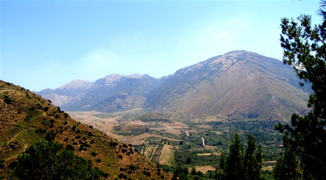

Anticlinale di Monte dei Cervi

ITALIANO
- Gigantesca e spettacolare piega anticlinale frutto della neotettonica madonita, da cui viene strutturato deformandolo il Massiccio di Monte dei Cervi.
INGLESE
- I am Gaetano Ferrarelli
Torna alla mappa